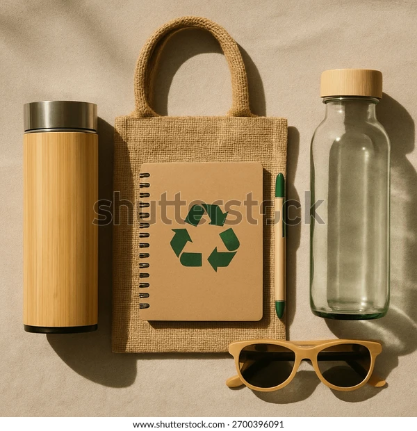
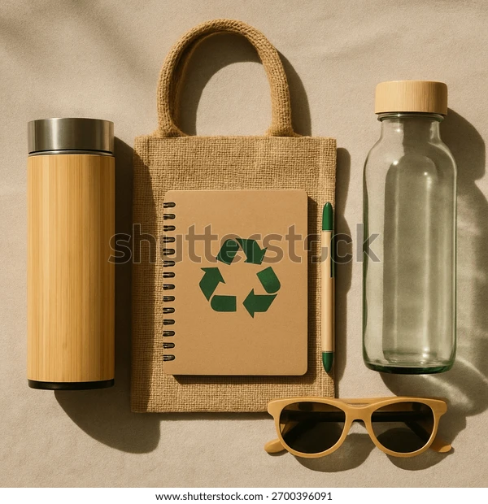
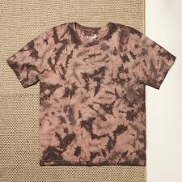
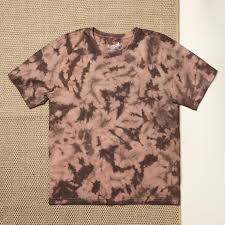

Product Details
 

Product 1: Eco-Friendly Water Bottle
- Made from sustainable bamboo & stainless steel
- BPA-free & eco-safe materials
- Double-wall insulation (hot & cold)
- Leak-proof & durable
- Lightweight & travel-friendly
An eco-friendly bottle designed to keep you hydrated while reducing plastic waste. A green bottle of water is a green substitute to single-use plastic bottles and contributes significantly to saving the environment. They are made to be used over a long period of time and they can resist frequent wear and tear. As the issue of plastic pollution and climate change develops, reusable water bottles have become an easy but efficient way to decrease the amount of waste and foster responsible consumption. Eco-friendly water bottles are made of the recycled materials, including stainless steel, glass, bamboo, or BPA-free recycled plastics, which are supposed to be harmless to human health and friendly to the planet. The fact that environmentally friendly water bottles can decrease the plastic waste is one of their key benefits. With the help of a reusable water bottle, people will be able to reduce the number of disposable plastics dramatically. Green water bottles are also environmentally friendly, durable and affordable. They are long-term unlike single-use bottles and they can withstand frequent wears and tears. Most reusable bottles come with insulation that makes drinks stay hot or cold several hours hence convenient to its users. Also, having a refillable bottle helps the person to save some money which would have been used to buy bottled water. To sum up, green water bottles are sustainable, minimize plastic waste, and provide healthier lifestyles. Most of the bottles contain insulation properties that can maintain hot or cold drinks to a long time, making them convenient to use in their day-to-day activities.
$8.09
 

Product 2: Organic Cotton T-Shirt
- Made from 100% certified organic cotton
- Free from harmful chemicals & pesticides
- Soft, breathable & skin-friendly fabric
- Eco-friendly production with low water usage
- Durable stitching for long-term use
- Ethically produced & fair-trade compliant
Comfortable and stylish, made from 100% organic cotton. The fashion industry is among the most powerful industries in the world, which should be considered the most harmful to the environment. Even though these factors of increased costs and inaccessibility have been experienced, the benefits of rehabilitation are much greater in the long run. The growth in production, fashion trends and excessive use of chemicals in the last few decades have put a strain of enormous importance on the natural resources and human health. The farmers in traditional cotton farms are usually exposed to the dangerous chemicals without the necessary protective gears. Consciousness of such problems is rising and consumers are looking to find sustainable options. One of these alternatives has been organic cotton T-shirts which have proved to be a viable, ethical and environmental friendly choice. They are very comfortable, durable, and fashionable and less harmful to the environment and adhering to the principles of fair labor. The farming of organic cotton is carried out with farming practices that emphasize the balance of the environment and human health. Organic cotton farming involves the use of natural processes in place of synthetic fertilizers, pesticides and genetically modified seeds like crop rotation,composting and pest control with biological methods unlike in conventional cotton agriculture. Such practices assist in sustainability of the soil, water pollution, and ecosystems. Organic cotton also has certifications by reputable institutions, which means that there are strict standards of environmental and social standards that are enforced during production. The fact that organic cotton T-shirts have a less negative impact on the environment is one of the greatest benefits. Traditional cotton cultivation is the cause of massive use of water and the pollution of chemicals. It has been estimated that one typical cotton T-shirt can take thousands of liters of water to produce and that the process uses chemicals, which pollute soil and waterways. Organic cotton, however, depends mostly on rain-fed irrigation and better soil management by cutting down water consumption to 90 percent. This water preservation is particularly significant in the areas of water shortage and climate change. Even through such uncomplicated measures as purchasing fewer, better-quality clothes, glancing at the labels on certifications, and spreading the idea of sustainable fashion, one can notice a remarkable impact. To conclude, organic cotton T-shirts could be a significant step to a more sustainable and ethical fashion industry. Another significant issue with the use of chemicals in cotton production in the traditional way is the use of chemicals. Conventional farming that involves the use of pesticides and insecticides does not only cause death to insects and wildlife species but is a threat to the health of farmers and people living around the farms. Such toxic chemicals find their way to food chains and drinking water catchments creating environmental damage in the long run. Organic farming of cotton removes such detrimental chemicals and hence clean air, healthy soil and safer environment. Wearing organic cotton T-shirts is thus a way of protecting the biodiversity and the natural habitat. In addition to the environmental goodness, organic cotton T-shirts have significant social and health benefits. In the long run, it may cause respiratory complications, skin illnesses, and health complications. Organic cotton production offers a healthier work place as it does not use toxic chemicals. There are also numerous projects utilizing organic cotton to support the small-scale farmers with fair prices, training, and long-term contracts to enhance their lives and financial security. On the consumer side, the organic cotton T-shirts are very popular because of their high comfort and quality. The fact that during growing and processing organic cotton fibers are not subjected to harsh chemicals also permits the natural softness of the piece to be preserved. Consequently, organic cotton T-shirts are less harsh on the skin and are unlikely to cause any irritation or allergic reactions. This renders them especially appropriate to those with tender skin, babies, and those with such medical circumstances as eczema or asthma. Another important characteristic of organic cotton T-shirts is their durability. Organic cotton has stronger fibers since the fibers have not been made weak using chemicals. It leads to clothing that is more durable and does not change its shape, color, and texture after the frequent washing. Although organic cotton T-shirts can be an expensive investment in the short-term, their durability ensures that it is a valuable investment in the long-term. Organic cotton garment is a better option to consumers who are keen on quality more than quantity. The further development of organic cotton T-shirts is highly dependent on consumer awareness and education. Ethical factors are also very important in popularity of organic cotton T-shirts. Most of the brands that manufacture organic cotton products follow the fair trade principles and ethical labor standards. Such norms provide safe work environment, good salaries and child labor is banned. The supply chain should be transparent to enable the consumer to know where and how their clothes are produced. However, buying organic cotton T-shirts, the consumer can contribute to the companies that respect social responsibility and human rights. With increased popularity of organic cotton T-shirts, innovation has been promoted in the fashion industry. Designers are also moving towards incorporation of organic cotton in association with environmentally conscious dyes, less harmful manufacturing methods and recyclable packaging. The technological progress has enabled the production of organic cotton clothing in a big variety of designs, colors, and sizes that can attract different consumer demands. This proves that sustainability and fashion may live together without having to sacrifice the creativity or the ability to express oneself. Organic cotton T-shirts have numerous benefits but there are certain challenges confronting them. Increased cost of production is one of the greatest challenges and is caused by intensive agricultural methods and certification. Also, the yield of organic cotton is sometimes less than that of conventional cotton, and this can also restrict supply. Nevertheless, as the number of consumers keeps increasing, and the idea of sustainable practices is gaining momentum, the economies of scale are contributing to the decrease of prices and enhancement of accessibility. Most individuals are not aware of the environmental and social consequences of their clothes.
$11.99

Product 3:Biodegradable Cleaning Wipes
- Made from biodegradable, plant-based materials
- Powerful cleaning with natural ingredients
- Free from harsh chemicals & toxins
- Breaks down naturally, reducing plastic waste
- Safe for kitchen, bathroom & household surfaces
- Environment-friendly & compost-safe disposal
Clean your home effectively and responsibly. Biodegradable wipes on the other hand break down in months in good conditions. Most of the brands add plant-based cleaners and essential oils which can provide powerful cleaning properties with a reduced environmental footprint. When biodegradable cleaning wipes are used in a responsible manner, it is a sensible move towards a cleaner household and a healthier planet in the next generations and sustainable everyday living. The alternative to disposable wipes which are a significant source of plastic pollution is biodegradable cleaning wipes, which are environmentally-friendly. These wipes are made out of natural material like bamboo, cotton or wood pulp and they have natural degradation period after being disposed of in the environment and hence they do not cause long-term environmental degradation. Biodegradable cleaning wipes have quite a number of benefits, one of which is their versatility. Depending on how they are made, they may be applied to household surfaces or kitchens, bathrooms, offices and even personal hygiene. This qualifies them as family, school and work place cleaners. Reduction of waste is also another valuable advantage. The customary wipes usually have synthetic fibers which continue to be present in the landfill and waterways over decades. It also promotes sustainable disposal of waste as some products are also compostable. Nevertheless, the consumer is expected to be discerning with labels. The term biodegradable does not necessarily imply that it is flushable and even inappropriate disposal may lead to plumbing problems. They are made to clean surfaces well but with little harsh chemicals that cause destruction to the ecosystems and human health.
$17.90